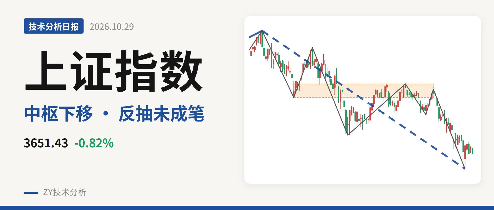
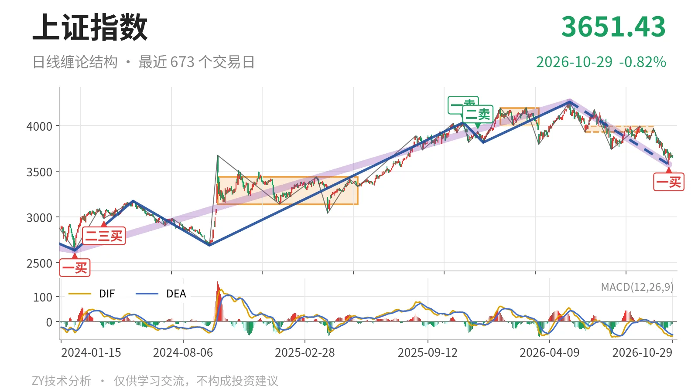
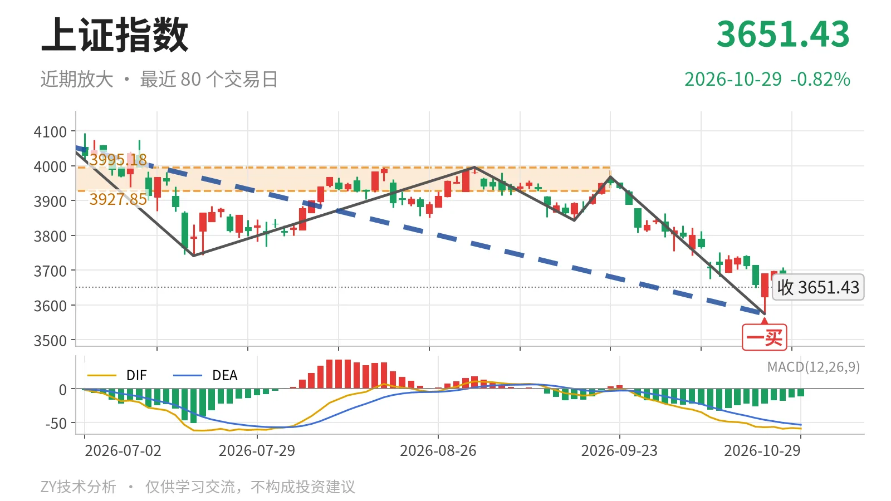

上证指数｜跌破中枢反抽未成笔 反压3928点

最近日线中枢 3927.85—3995.18点，收盘位于中枢之下
一句话：日线仍处5月14日以来下跌段，反弹尚未成笔，结构偏弱。
📉 走势结构：5月14日以来下跌段还在延续
当前日线仍处在5月14日以来的下跌段中，没有结束。更大级别走势里，2024年2月5日至2026年5月14日的上涨段尚未走完，5月14日至10月23日的下跌段更像是对前段上涨的回落，本身也没有结束。日线线段由4258.86点跌至3574.27点，跌16.1%，内含7笔，这段下跌还在延续；10月26日至10月29日的反抽最高3708.20点，只有4根K线，没有形成日线笔，不改变下跌段结构。

🧭 中枢位置：跌破最近中枢下沿，中枢继续下移
最新收盘3651.43点，处在6月8日至9月22日中枢3927.85—3995.18点下方，低于下沿约7.0%。这个日线笔中枢尚未完成，与1月14日至3月23日中枢4002.78—4190.87点相比，下沿从4002.78点降到3927.85点，中枢继续下移。价格离下沿还有约276点，短期反抽首先要面对3928点附近的结构位。
🎯 买卖点：一卖二卖压低，10月23日一买未带出日线反弹笔
日线笔级别卖点一个比一个低：2025年11月14日一卖4034.08点，2025年12月8日二卖3936.31点。回落后，10月23日出现一买3574.27点，所在笔9月22日至10月23日已经结束。但10月26日以来的最高只有3708.20点，反弹尚未形成新的日线上涨笔，这个一买还未带出日线笔级别修复；若后续再跌破3574点，该一买会退化为更小级别的转折。

⚖️ 背驰：最后一笔下跌未现标准底背驰
最后一笔下跌没有出现标准底背驰。比较最近中枢前与离开中枢的两段下跌笔：5月14日至6月8日下跌笔绿柱面积360，DIF低点-21.1；9月22日至10月23日下跌笔绿柱面积347，DIF低点-57.1。价格创了新低，绿柱面积只是略缩，DIF低点反而大幅下移，这不是“新低不新弱”，说明下跌动能没有出现清晰衰减。10月23日一买因此更偏向一笔内部的小级别转折，日线底部结构未完成。
📐 关键位置：反抽不到3928点附近则偏三卖
上方最近中枢下沿在3928点附近，反抽若不能回到该位置上方，结构上就构成三卖，中枢下移后的压力会延续。下方3574点暂未失守；若重新站上3928点附近，5月14日以来的下跌更可能只是中枢扩展。最新MACD的DIF为-59.1，仍在零轴下，柱为-11.4，绿柱未消失，日线结构偏弱。
⚠️ 本文为基于公开行情数据的缠论技术结构记录，由程序自动计算并生成，仅供学习交流，不构成任何投资建议。市场有风险，投资需谨慎。